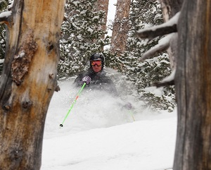

About Me
I am currently enrolled in coding boot camp at The University of Denver. This is the second time I have attended classes at the school. I graduated from the Daniels College of Business in 1999 with a BSBA in Finance. It is nice to be back. A lot has changed on campus. While living in Salt Lake City, I obtained an associates degree in geographic information systems from Salt Lake Community College.
I work as the director of operations at Casino Party USA. We are a small Denver based company that specializes in providing casino themed events for fundraisers and corporate events. Our company puts on over 300 events each year. I love working in a small business environment and being faced with different tasks each day.
One of my favorite things about living in Colorado is the access to some of the best skiing in the Country. I learned how to ski when I was 4, and have been lost in the mountains ever since. When it is too warm to ski, I take to the roads on a motorcycle.